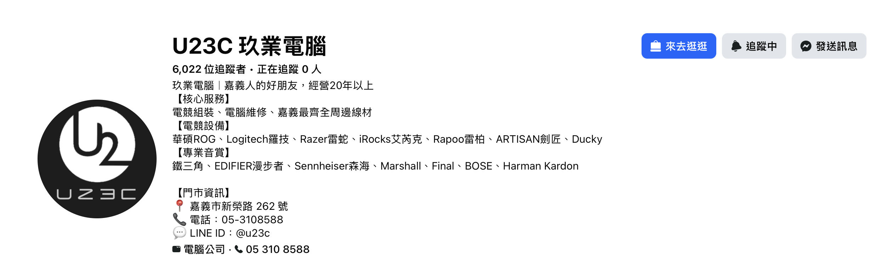
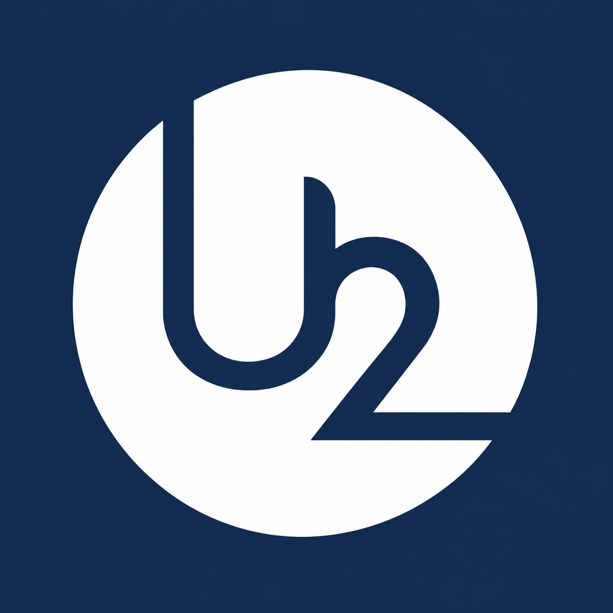
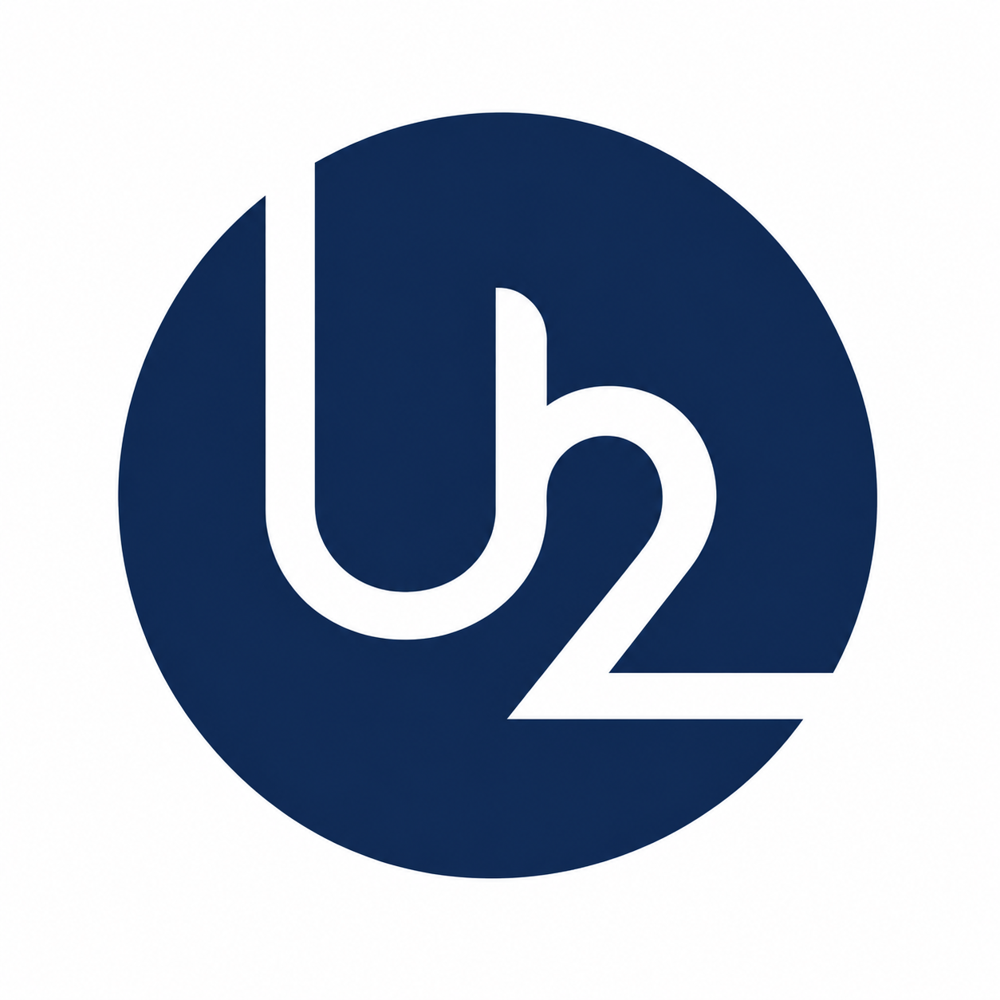
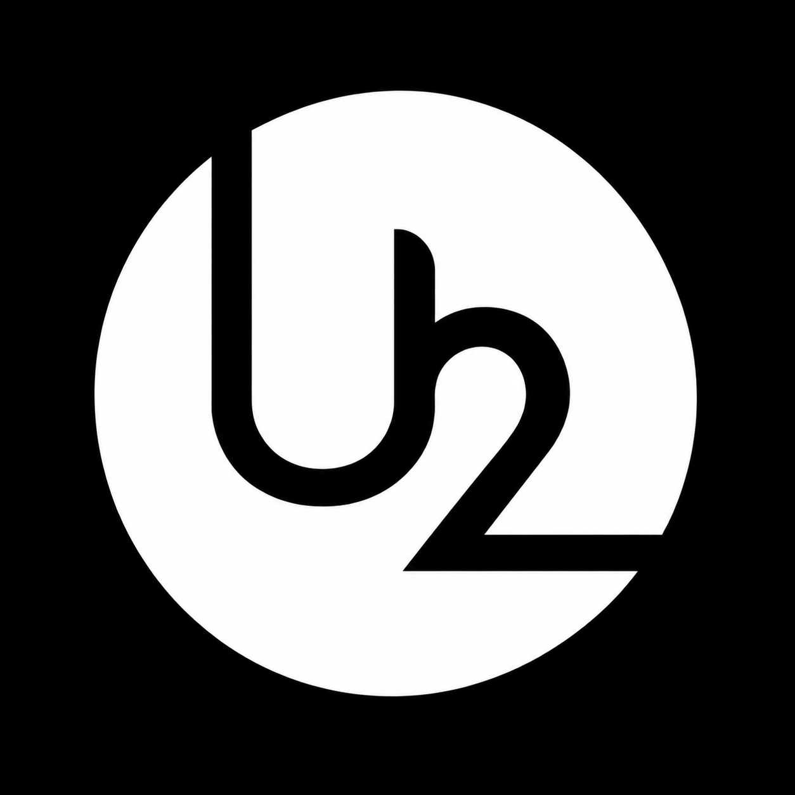
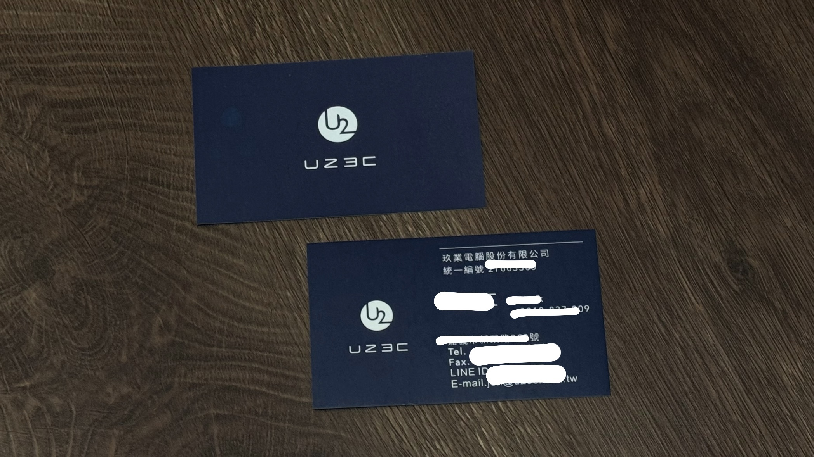

U₂社群頭貼

01 / SOCIAL PROFILE
社群頭貼
展示 Logo 在社群媒體的小尺寸、圓形裁切情境下的呈現效果。

這次的專案是協助小型企業 U2 進行 Logo 設計。我根據品牌方提出的需求與希望呈現的視覺形象，思考如何將抽象的概念轉換成具辨識度、並適合實際使用的標誌。
從前期的溝通、草圖發想到版本調整與定稿，我希望作品不只是符合品牌方想要的樣子，也能在不同使用情境下保持清楚的辨識度。
這裡用「需求與設計回應」的方式整理雙方的討論重點。以下先保留填寫位置，之後可以替換成你當時收到的實際需求與自己的設計想法。
［在這裡填入品牌方希望 Logo 呈現的風格、重點元素與使用需求。建議用自己的話整理，不需要假裝是客戶的逐字原話。］
［這裡寫你如何回應需求，例如想用什麼圖形結構、字體設計或視覺風格。］
社群頭貼、公司外部的大型防水帆布，以及名片，都是這次 Logo 需要考慮的應用情境。
因此我也需要考慮 Logo 放大、縮小後的辨識度，以及在不同背景色上呈現時的清晰程度。
從手繪草圖或初步構想，逐漸找出適合品牌的 Logo 形式。建議選擇 2～3 張真正反映你設計過程的圖片。


［這裡可以用 2～3 句話寫下：你原本有哪些想法、最後選擇了哪個方向，以及原因。沒有實際製作過的草圖就不必補造。］
這一段以實際版本的演變為主：呈現你怎麼修改 Logo，而不只是展示最後的成果。

［初版的構成與設計方向］

［實際調整了哪些細節？為什麼要調整？］

［定稿版本與前面相比的改善］
同一套 Logo 分別應用在深藍、白色與黑色背景，依照不同使用場合選擇合適的版本。


這次的標誌也用在不同媒介上，包含社群頭貼、公司外部的大型防水帆布，以及名片。

展示 Logo 在社群媒體的小尺寸、圓形裁切情境下的呈現效果。

展示 Logo 在公司外部的大尺寸識別，呈現不同觀看距離下的辨識效果。

從較小的印刷尺寸檢視 Logo、品牌資訊與留白之間的配置。［可再補上你的實際設計考量。］
［這裡可以寫：和品牌方合作時，你學到如何理解別人的需求，並在自己的設計想法與實際使用限制間取得平衡。請補上真實經驗。］
［這裡可以寫：現在回頭看，你覺得有哪些部分還能調整，例如初期需求訪談、提案比較、縮放測試或應用規範等。］